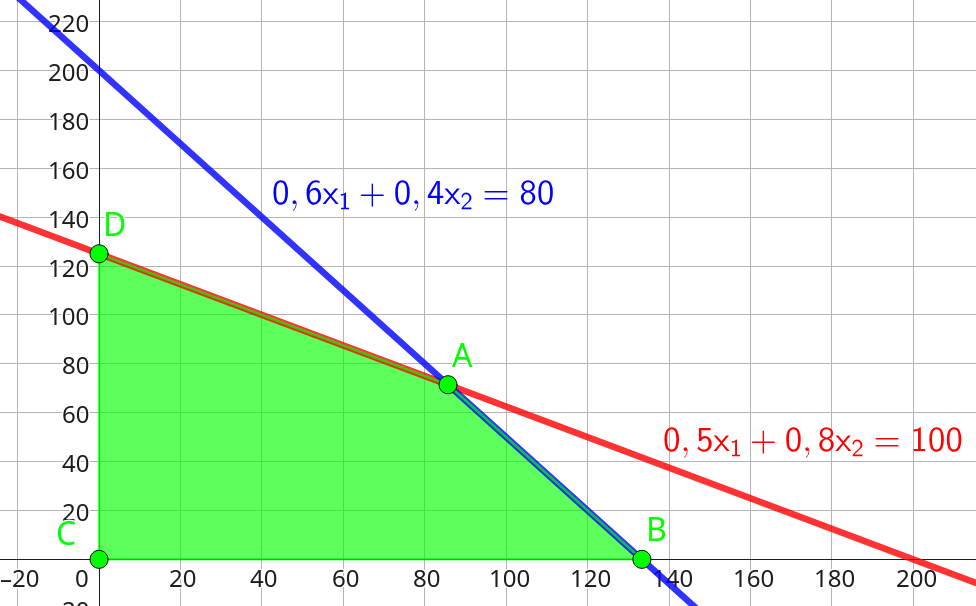
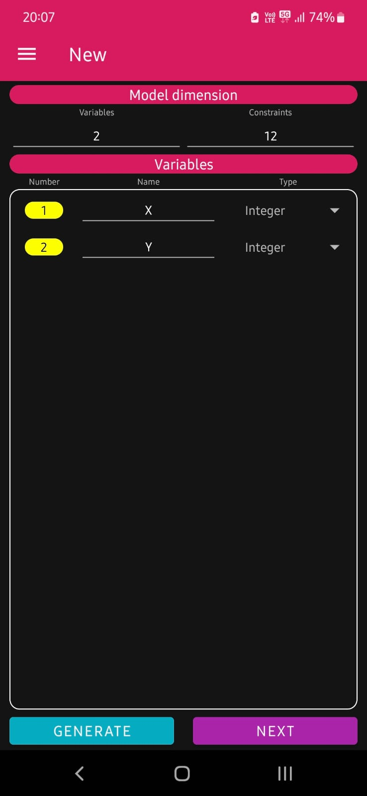
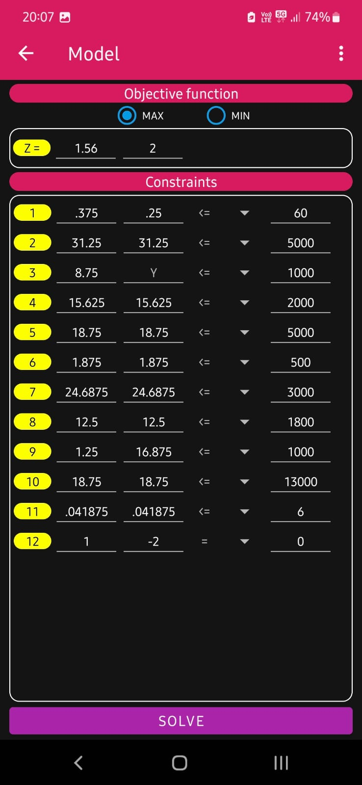
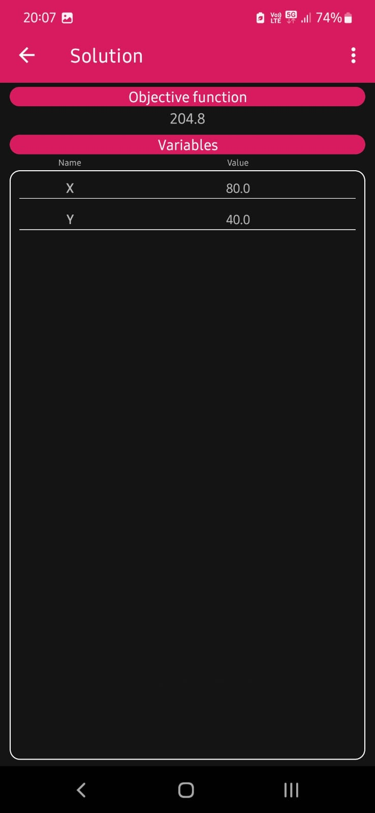
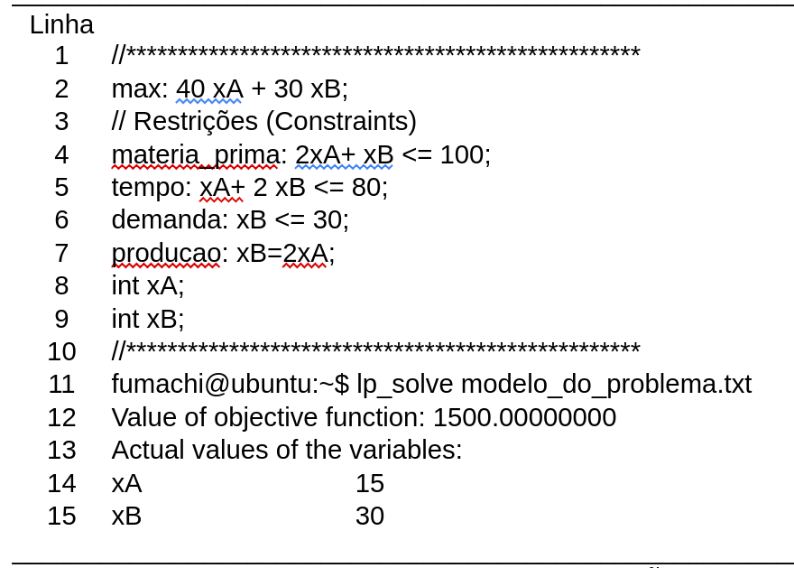

Exemplo: Imagine que você ganhou 10 milhões de reais na loteria e deseja parar de trabalhar e viver somente de rendimentos. Você recebe orientações e decide que vai investir em poupança e em casas de aluguel. Além disso você ainda quer deixar uma quantia de dinheiro recebida do prêmio para gastar como quiser. Suponha que o rendimento da poupança seja igual a 0,35% ao mês e que as casas de aluguel que você vai comprar possuem preço médio de 200.000 reais e serão alugadas por 600 reais por mês. Modele matematicamente o rendimento mensal em função da quantia deixada na poupança e em função da quantidade de casas alugadas. Varie os valores máximos de investimento para cada item e calcule os rendimentos em cada caso. Mostre através de uma tabela qual seria a configuração de investimento que mais traria maior rendimento. Considere o valor máximo de dinheiro para gastar como quiser igual a até 3 milhões de reais.
Uma fábrica produz dois tipos de ração para animais: tipo A e tipo B. Cada quilo da ração A dá um lucro de R\$ 30,00 e cada quilo da ração B dá um lucro de R$ 20,00. A produção diária está limitada a 100 kg de milho e 80 kg de soja. Cada quilo da ração A consome 0,5 kg de milho e 0,6 kg de soja. Cada quilo da ração B consome 0,8 kg de milho e 0,4 kg de soja. Encontre a quantidade de cada ração que maximiza o lucro diário.
Formulação:
Maximizar: \(Z = 30x_1 + 20x_2\)
Sujeito a:
\( \left\{ \begin{aligned} 0,6 x_1 + 0,4 x_2 &\le 80 \,\,\,\, \text{(soja)} \\ 0,5 x_1 + 0,8 x_2 &\le 100 \,\,\,\, \text{(milho)} \\ x_1, x_2 \ge 0 \end{aligned} \right. \)
onde \(x_1\) = kg de ração A e \(x_2\) = kg de ração B
Resolução do exercício 1
Para resolver usando o método gráfico basta colocarmos as equações no plano cartesiano a fim de descobrir a região de interesse.
A figura com a região de interesse, ou seja, a região onde todas as restrições sejam satisfeitas (área verde).

No entanto, pela figura acima, é possível verificar que temos quatro pontos que formam a região verde, que são os pontos A, B, C e D.
O ponto C é a origem, ou seja (0,0) e, obviamente, não maximizará a nossa função objetivo.
Os pontos B e D podem ser determinados mais facilmente pois são pontos que interseccionam os eixos \(x_1\) (horizontal) e \(x_2 \) (vertical), assim, o ponto B é (133,0) e o ponto D é (0,125).
O ponto A será calculado através da interseção entre a reta azul (\( 0,6x_1+0,4x_2=80\)) com a reta vermelha (\( 0,5x_1+0,8x_2=100\)).
Esta situação trata-se de um sistema de equações lineares, e pode ser representado abaixo:
\[ \left\{ \begin{aligned} 0,6x_1+0,4x_2 &=80 \\ 0,5x_1+0,8x_2 &=100 \end{aligned} \right. \]
O próximo passo é resolver esse sistema. Como trata-se de um sistema de ordem 2 (2 equações e 2 variáveis) vamos resolver o método de Cramer (o leitor pode consultar o material de Álgebra Linear na página principal desse site para saber mais! ;))
Para usar o método de Cramer precisamos definir as matrizes \( \mathbb{M} \), \( \mathbb{M}_{x_1} \) e \( \mathbb{M}_{x_2} \) como segue:
\[ \mathbb{M} = \begin{bmatrix} 0,6 & 0,4 \\ 0,5 & 0,8 \end{bmatrix}, \mathbb{M}_{x_1} = \begin{bmatrix} 80 & 0,4 \\ 100 & 0,8 \end{bmatrix}, \mathbb{M}_{x_2} = \begin{bmatrix} 0,6 & 80 \\ 0,5 & 100 \end{bmatrix} \]
Uma vez que as matrizes foram definidas, é necessário calcular o determinante delas, como segue:
\[ \begin{aligned} \det \mathbb{M} &= 0,6 \cdot 0,8 - 0,4 \cdot 0,5 = 0,48 - 0,2 = 0,28 \\ \det \mathbb{M}_{x_1} &= 80 \cdot 0,8 - 0,4 \cdot 100 = 64 - 40 = 24 \\ \det \mathbb{M}_{x_2} &= 0,6 \cdot 100 - 80 \cdot 0,5 = 60 - 40 = 20 \end{aligned} \]
Para calcular os valores de \( x_1 \) e \( x_2 \) basta fazer:
\[ \begin{aligned} x_1 &= \frac{\det \mathbb{M}_{x_1}}{\det \mathbb{M}} = \frac{24}{0,28}=85,71 \approx 86 \\ x_2 &= \frac{\det \mathbb{M}_{x_2}}{\det \mathbb{M}} = \frac{20}{0,28}=71,42 \approx 71 \end{aligned} \]
Assim, as coordenadas do ponto A são (86, 71).
Por fim, precisamos calcular qual dos pontos otimizará a função objetivo, ou seja, qual ponto da região de interesse produzirá o maior resultado (maximização). Para realizar esse cálculo basta substituirmos os valores das coordenadas de cada ponto na função objetivo:
Ponto B(133 , 0)
\[ Z=30 \cdot x_1 + 20 \cdot x_2 = 30 \cdot 133 + 20 \cdot 0 = 3990 \]
Ponto D(0 , 125)
\[ Z=30 \cdot x_1 + 20 \cdot x_2 = 30 \cdot 0 + 20 \cdot 125 = 2500 \]
Ponto B(86 , 71)
\[ Z=30 \cdot x_1 + 20 \cdot x_2 = 30 \cdot 86 + 20 \cdot 71 = 4000 \]
Enfim, o ponto que otimiza (maximiza) é o ponto A(86 , 71), ou seja, o maior lucro R\$4000,00 vem da produção de 86 kg da ração A e 71kg da ração B.
Uma transportadora utiliza dois tipos de caminhões para entregas: modelo X e modelo Y. Cada viagem do modelo X gera um lucro de R\$ 120,00 e cada viagem do modelo Y gera um lucro de R$ 150,00. Os caminhões têm limitações de peso e volume: cada modelo X pode transportar até 3 toneladas e 10 m³, enquanto cada modelo Y pode transportar até 4 toneladas e 8 m³. A empresa tem disponibilidade para transportar no máximo 24 toneladas e 60 m³ por dia. Quantas viagens de cada modelo devem ser feitas para maximizar o lucro diário?
Formulação:
Maximizar: \(Z = 120x_1 + 150x_2\)
Sujeito a:
\( \left\{ \begin{aligned} 3 x_1 + 4 x_2 &\le 24 \,\,\,\, \text{(toneladas)} \\ 10 x_1 + 8 x_2 &\le 60 \,\,\,\, \text{(metros cúbicos)} \\ x_1, x_2 \ge 0 \end{aligned} \right. \)
onde \(x_1\) = viagens do modelo X e \(x_2\) = viagens do modelo Y
Um agricultor planta milho e soja em suas terras. Cada hectare de milho dá um lucro de R\$ 1.200,00 e cada hectare de soja dá um lucro de R$ 1.500,00. Ele tem disponível 50 hectares de terra, 120 horas de trabalho por mês e 80 litros de fertilizante. Cada hectare de milho requer 3 horas de trabalho e 2 litros de fertilizante. Cada hectare de soja requer 4 horas de trabalho e 3 litros de fertilizante. Determine quantos hectares de cada cultura devem ser plantados para maximizar o lucro.
Formulação:
Maximizar: \(Z = 1200x_1 + 1500x_2\)
Sujeito a:
\( \left\{ \begin{aligned} x_1 + x_2 &\le 50 \,\,\,\, \text{(hectares de terra)} \\ 3 x_1 + 4 x_2 &\le 120 \,\,\,\, \text{(horas de trabalho)} \\ 2 x_1 + 3 x_2 &\le 80 \,\,\,\, \text{(litros de fertilizante)} \\ x_1, x_2 \ge 0 \end{aligned} \right. \)
onde \(x_1\) = hectares de milho e \(x_2\) = hectares de soja
Uma fábrica de brinquedos produz carrinhos e bonecas. Cada carrinho dá um lucro de R\$ 15,00 e cada boneca dá um lucro de R$ 20,00. A fábrica tem disponível 40 kg de plástico e 60 horas de mão de obra por semana. Cada carrinho consome 0,5 kg de plástico e 1 hora de mão de obra. Cada boneca consome 0,8 kg de plástico e 1,5 horas de mão de obra. Além disso, a demanda máxima semanal é de 50 carrinhos e 40 bonecas. Encontre a quantidade de cada brinquedo que maximiza o lucro semanal.
Formulação:
Maximizar: \(Z = 15x_1 + 20x_2\)
Sujeito a:
\( \left\{ \begin{aligned} 0,5 x_1 + 0,8 x_2 &\le 40 \,\,\,\, \text{(kg de plástico)} \\ x_1 + 1,5 x_2 &\le 60 \,\,\,\, \text{(horas de mão-de-obra)} \\ x_1 &\le 50 \,\,\,\, \text{(demanda máxima de carrinhos)} \\ x_2 &\le 40 \,\,\,\, \text{(demanda máxima de bonecas)} \\ x_1, x_2 \ge 0 \end{aligned} \right. \)
onde \(x_1\) = número de carrinhos e \(x_2\) = número de bonecas
Para cada exercício, trace as retas correspondentes às restrições em um plano cartesiano, identifique a região viável e encontre o ponto ótimo testando os vértices da região na função objetivo.
Modelo por fatia - Aula - 28/10/2024
Modelo LP Solve Final (Lucro=Receita-Custo) por fatia
O modelo acima será resolvido usando o APP (Android) chamado MILP, na versão gratuita.
Esse aplicativo suporte até 12 restrições (Constraints) e no modelo temos 13 restrições.
Para contornar esse "problema" devemos analisar o modelo e excluir uma restrição para podermos digitar no aplicativo e resolver a situação de maximização do lucro.
A restrição que poderá ser removida está relacionada com os guardanapos pois, embora esteja relacionada com o lucro, ela não é "fundamental" para a produção dos bolos, ou seja, não se usa guardanapo como ingrediente dos bolos.
Desse modo, as imagens abaixo poderão ser usadas para replicar no celular e poder resolver alguns dos exercícios abaixo.



Note que na função objetivo o valor -64 não foi inserido. Desse modo, do valor calculado deve ser retirado -64, que corresponde ao "salário diário".
Para as questões de 21 a 32, considere a imagem:

Como citar essa página:
FUMACHI, E. F. . Disponível em: . Acesso em: .